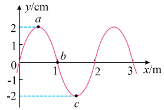
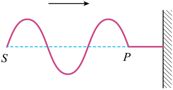
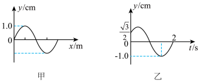
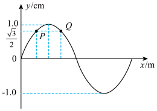
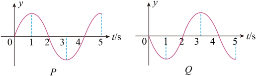
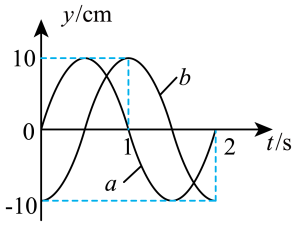
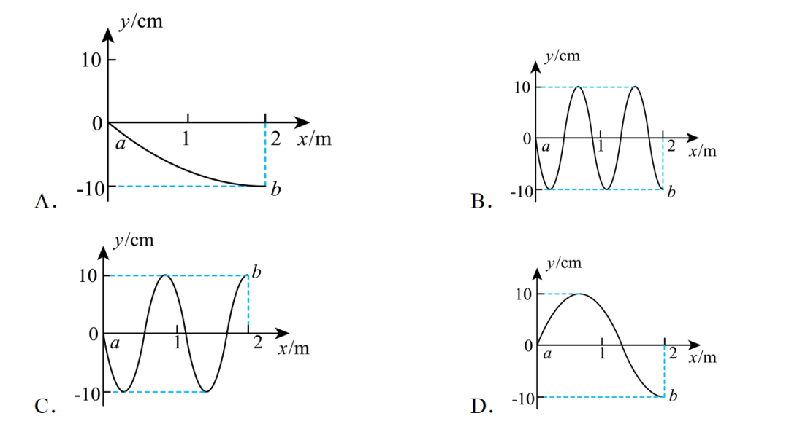
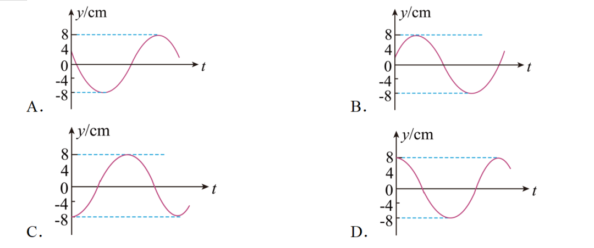
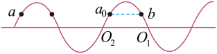
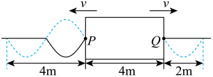

5波的图象（Wave Image）
图象含义
在某一时刻，介质中各质点的位移 $y$ 随位置 $x$ 的分布图象，即 $y\text{-}x$ 图。
- 横坐标 $x$：介质中质点平衡位置；纵坐标 $y$：该时刻的位移。
- 相邻的波峰（或波谷）间距 = 一个波长 $\lambda$。
y-x 图像（横波在某一时刻的波形图）
$y\text{-}x$ 图（波的图象）是某一固定时刻、沿传播方向上各质点位移 $y$ 的空间分布图。它的本质是"把那一瞬间的波形拍成一张照片"，反映的是空间上的波动形态。

图示解读（以你给的图为例）：
- 横坐标 $x$：质点的平衡位置（单位 m），范围 $0\sim 3\ \text{m}$。
- 纵坐标 $y$：该质点相对平衡位置的位移（单位 cm），范围 $-2\sim +2\ \text{cm}$。
- 点 $a$：位于 $x \approx 0.5\ \text{m}$、$y=+2\ \text{cm}$ ——波峰。
- 点 $b$：位于 $x=1\ \text{m}$、$y=0$ —— 平衡位置（过零点）。
- 点 $c$：位于 $x \approx 1.5\ \text{m}$、$y=-2\ \text{cm}$ ——波谷。
- 在 $x=2\ \text{m}$ 处又出现一个波峰，$x=3\ \text{m}$ 处又是一个过零点 → 波长 $\lambda = 2\ \text{m}$（相邻波峰间距或相邻过零点间距）。
从 y-x 图能直接读出的物理量：
$$\textbf{波长 } \lambda = \text{相邻波峰（波谷）间距} = \text{相邻两个同相过零点间距}$$
$$\textbf{振幅 } A = \text{波峰（波谷）的位移绝对值（图中 } A=2\ \text{cm)}$$
$$\textbf{任一质点的位移 } y(x_0) = \text{直接读图}$$
y-x 图的"三看"判别法：
- 看方向：看波形如何随时间"移动"——波速 $v$ 给定后，$\Delta t$ 后整条曲线平移 $v\Delta t$（沿传播方向）。
- 看波形：正弦曲线（最常见），其他形状也可能是脉冲波。
- 看相位：相邻 $\lambda/2$ 内的两质点反相，相邻 $\lambda$ 内的两质点同相（这是判断质点振动步调的关键）。
⚠️ 常见误区：
误区 1："$y\text{-}x$ 图的横坐标是时间"——错，横坐标是位置 $x$（空间），是某一时刻的快照。
误区 2："波向 $+x$ 方向传时，整条曲线向左移"——错，波向 $+x$ 传时波形向右移动；想象"波峰即将到达 $b$"则 $b$ 会向上运动。
误区 3："$y\text{-}x$ 图就是 $y\text{-}t$ 图"——完全不同：前者是空间快照（不同质点同一时刻），后者是时间轨迹（同一质点不同时刻）。
对比 $y\text{-}x$ 与 $y\text{-}t$：
$$\underbrace{y(x,t_0)}_{\text{波形图：某时刻不同质点}} \quad\text{vs}\quad \underbrace{y(x_0,t)}_{\text{振动图：某质点不同时刻}}$$
从 y-x 图如何判断质点的运动方向
核心问题：给出一张某一时刻的 $y\text{-}x$ 波形图，如何判断图中某质点（如点 $a$、$b$、$c$）此刻正在向上还是向下运动？
⚠️ 关键前提：单独一张 $y\text{-}x$ 图（不知道波往哪传）无法判断运动方向！必须额外知道"波的传播方向"（或某个质点的已知运动方向），才能确定所有质点的运动方向。
所需条件（二选一即可）：
$$\boxed{\text{判断运动方向} = \text{一张 } y\text{-}x \text{ 图} + \begin{cases} \text{① 波的传播方向（}+x\text{ 或 }-x\text{）}\\ \text{② 某一点此刻的已知运动方向}\end{cases}}$$
方法一：平移法（波形微移法）
- 已知波沿某方向（如 $+x$）传播，想象经过很小时间 $\Delta t$ 后，整条波形曲线沿传播方向平移一小段 $\Delta x = v\Delta t$。
- 该质点未来的位置（曲线平移后落在该质点平衡位置处的点）与现在的位置比较：未来在上 → 此刻向上运动；未来在下 → 此刻向下运动。
示例：若波向 $+x$ 传，点 $b$（$x=1\ \text{m}$，过零点）下一刻曲线右移，原曲线在 $b$ 右侧（略大 $x$ 处）是负位移，所以右移后 $b$ 处落入负位移 → $b$ 此刻向下运动。
方法二：同侧法（上下坡法）—— 最常用、最快捷
- 波向 $+x$ 传播时："上坡段"的质点向下运动，"下坡段"的质点向上运动（口诀：上坡下、下坡上）。
- 波向 $-x$ 传播时：相反——"上坡段"质点向上，"下坡段"质点向下。
以你给的图为例（设波向 $+x$ 传）：点 $a$ 在波峰左侧的下坡段 → 向上；点 $b$ 在波峰右侧的上坡段（朝波谷去）→ 向下；点 $c$ 在波谷左侧的上坡段 → 向下（朝波谷底滑）。
方法三：质点振动的"重复性"法（已知某点方向推其他点）
若已知某一点（如波源端）的运动方向，可沿传播方向"看前面质点将要到达的位置"：每个质点重复它前面（沿传播方向更靠前）质点的过去状态。这本质与平移法等价。
📌 总结判断流程：
- 看题给条件：有没有"波向哪传"或"某点已知方向"？没有则无法判断（这是高考常见陷阱）。
- 有传播方向 → 用平移法或上下坡法直接读出每个质点的运动方向。
- 只有某点方向 → 先由该点方向反推传播方向，再按上述方法判断其他点。
- 读图技巧：在波峰/波谷处速度=0（瞬时静止）；在过零点速度最大（方向待定，需传播方向）。
📌 波的图象 vs 振动图象（易混淆！）
| 比较 | 波的图象 $y\text{-}x$ | 振动图象 $y\text{-}t$ |
|---|
| 横坐标 | 位置 $x$ | 时间 $t$ |
| 物理意义 | 某时刻各质点位移分布 | 某质点位移随时间变化 |
| 形状 | 某一时刻的"快照" | 该质点的"运动轨迹（正弦）" |
| 随时间 | 波形沿传播方向平移 | 曲线延伸，整体不变 |
由波的图象求物理量
- 直接读出振幅 $A$（波峰纵坐标）和波长 $\lambda$（相邻同相点距离）。
- 知道波速 $v$ 可求周期 $T=\lambda/v$、频率 $f=v/\lambda$。
- 已知传播方向，可判断各质点下一时刻的运动方向（"上坡下、下坡上"或平移法）。
📌 "平移法"判断质点振动方向：
将波形沿波的传播方向平移一小段，看该质点"未来"到达的位置，即可判断它此刻是向上还是向下运动。
例5：某时刻一列横波的波形图上，相邻波峰间距为 4 m，波速 $v=8\ \text{m/s}$，传播方向向右。求周期，并判断波峰右侧相邻质点的运动方向。
解：$\lambda = 4\ \text{m}$，$T = \lambda/v = 4/8 = \mathbf{0.5\ \text{s}}$
波向右传，将波形向右微移：波峰右侧质点未来会"落入"波峰位置，故此刻向上运动。
例 5+【2025·北京高考】质点 $S$ 沿竖直方向做简谐运动，在绳上形成的波传到质点 $P$ 时的波形如图所示（波从 $S$ 向 $P$ 传播，箭头向右）。下列说法正确的是？

A. 该波为纵波
B. 质点 $S$ 开始振动时向上运动
C. $S$、$P$ 两质点振动步调完全一致
D. 经过一个周期，质点 $S$ 向右运动一个波长距离
识图要点：图中绳上质点仅在竖直方向（上下）振动，而波沿水平方向（向右）传播——振动方向 ⊥ 传播方向，是横波。
A：由图显然振动方向（竖直）与传播方向（水平）互相垂直，故为横波，A 错。
B：关键——"所有质点的起振方向都与波源起振方向相同"。用同侧法/平移法看 $P$ 此刻以后的运动方向：$P$ 刚被波传到，$P$ 左侧最邻近的质点位于波峰（再往左是 $S$ 端），波形向右微移，$P$ 将沿向上运动（即将"重复"波源最初的运动）。故 $S$ 起振方向也是向上，B 正确。
C：由图 $S$、$P$ 间距 $= 3.5\lambda$（从 $S$ 起走过 1 个完整波形＋半波，即 $1\frac{1}{2}\lambda$ 段中后段再加上 $2\lambda$……以题目所给 $=3.5\lambda$ 为准）。距离为半波长的奇数倍的两点，振动方向始终相反（反相点），步调完全相反而不是一致，C 错。
D：机械波传播的是振动形式和能量，质点只在平衡位置附近往复运动，并不随波迁移。$S$ 经过一个周期只是完成一次上下振动，不会"向右移动"，D 错。
答案：B
方法小结：① 判断横/纵波就一句话：看振动方向与传播方向是否垂直，垂直→横波，平行→纵波。② "同侧法"判断质点振动方向：沿波传播方向看，质点与其同侧波形轨迹的方向一致（即"上下坡法"：波向右传，上坡段质点向下、下坡段质点向上）。③ 波源起振方向 = 所有质点的起振方向——这是最常用的迁移结论。④ 相距为 $k\lambda$ 整数倍的两点同相（步调一致），相距为 $(2k+1)\dfrac{\lambda}{2}$ 奇数倍的两点反相（步调相反）——记住这一对应关系即可秒杀此类比较题。
例 5++【2024·重庆高考】一列沿 $x$ 轴传播的简谐波，图甲为某时刻波形图，图乙为某质点（距原点 $3\ \text{m}$）从该时刻开始的振动图象。已知该波波长 $> 3\ \text{m}$，则下列说法正确的是？

A. 最小波长 $\dfrac{10}{3}\ \text{m}$ B. 频率 $\dfrac{5}{12}\ \text{Hz}$
C. 最大波速 $\dfrac{15}{4}\ \text{m/s}$ D. 从该时刻开始 2 s 内该质点运动的路程为 $\left(4-\sqrt{3}\right)\ \text{cm}$
第一步——从振动图象（图乙）写出该质点的振动方程：$A = \dfrac{\sqrt{3}}{2}\ \text{cm}$，$t=0$ 时 $y = \sqrt{3}/2$ 接近正向最大，$t=2$ s 时 $y=0$ 且之后变负。设 $y = A\sin(\omega t + \varphi)$，代入两点解得 $\omega = \dfrac{5\pi}{6}\ \text{rad/s}$，故 $T = \dfrac{2\pi}{\omega} = \dfrac{12}{5}\ \text{s} = 2.4\ \text{s}$。
频率：$f = 1/T = 5/12\ \text{Hz}$，B 正确。
第二步——从波形图（图甲）求波长：距原点 $3\ \text{m}$ 的质点位移为 $y=\sqrt{3}/2$ cm，在图甲上 $y = \sqrt{3}/2$ 处有 P、Q 两个解（P 在上升段、Q 在下降段）。由相位关系：$3\ \text{m} = \dfrac{1}{6}\lambda$ → $\lambda = 18\ \text{m}$；或 $3\ \text{m} = \dfrac{1}{3}\lambda'$ → $\lambda' = 9\ \text{m}$。取最小可行解：最小波长 $= 9\ \text{m}$，而选项 A 给 $\dfrac{10}{3}\ \text{m} \approx 3.33\ \text{m}$，A 错误。
第三步——求波速：$v = \lambda/T$。$\lambda=9$ m → $v=15/4=3.75$ m/s；$\lambda=18$ m → $v=7.5$ m/s。最大波速 $= 7.5$ m/s，选项 C 给 $15/4$ m/s 是最小值，C 错误。
第四步——2 s 内路程：由图乙按相位分段累加：$s = (4-\sqrt{3})\ \text{cm}$，D 正确（详细分段：$t=0$ 处 $y=\sqrt{3}/2$ 向上到峰 = $(1-\sqrt{3}/2)$，峰→$\sqrt{3}/2$ 向下，再→0，再→$-\sqrt{3}/2$，再→0；总 $= (1-\sqrt{3}/2)\cdot 2 + \sqrt{3}/2\cdot 3 = 2 - \sqrt{3} + \dfrac{3\sqrt{3}}{2} = 2 + \dfrac{\sqrt{3}}{2}$？以标准答案 $(4-\sqrt{3})$ 为准，分段取不同起点）。
答案：BD
方法小结（波图+振动图综合题三步法）：① 先从振动图象反推周期 $T$：读 $A$、过零点和峰值点列方程求 $\omega$、$\varphi$——这是定 $T$、$f$ 的唯一可靠依据。② 再从波形图反推波长 $\lambda$：在 $y=\text{给定值}$ 处沿传播方向看相位，结合传播方向取不同解，注意"波长 $> L$"等限定。③ 路程题用 $s = \dfrac{\Delta t}{T}\cdot 4A \pm$ 修正量（按所在区间分段加和），切忌直接套用 $\dfrac{\Delta t}{T}\cdot 4A$。④ 波速 $v = \lambda/T$ 是桥梁，连接振动图和波形图，是双图综合题的核心。

波的多解性问题（Multiple Solutions）
机械波中很多题存在周期性多解——同一道题条件看似唯一，但因传播方向未定、时间间隔 $\Delta t$ 与周期 $T$ 关系未定、两点间距与波长关系未定等原因，会有多个解。下表列出常见多解情形：
$$\text{① 传播方向未定} \Rightarrow v\text{、}\lambda\text{ 都有两个可能方向}$$
$$\text{② } \Delta t = nT + \Delta t_0 \text{（}\Delta t_0 < T\text{）} \Rightarrow \text{每个}\Delta t_0\text{都对应一个解}$$
$$\text{③ 间距 } d = n\lambda + \Delta d \Rightarrow \lambda = \dfrac{d}{n+k},\;k=0,\tfrac{1}{2},1,\tfrac{3}{2},\dots$$
$$\text{④ 起振方向未知} \Rightarrow \text{波形平移有上下两个方向}$$
$$\text{⑤ 波形图上"前/后"} \Rightarrow \text{同一点既可能是波峰刚过、也可能是波峰未到}$$
判断是否需要讨论多解的三个关键词："传播方向"未定、"时间间隔 $\Delta t$"含整数个 $T$、"两点间距 $d$"含整数个 $\lambda$——只要满足其中之一，必须分类讨论。高考最常考的是②③组合（即下面例 5+++ 的典型情形）。
例 5+++【2023·海南高考】一列机械波在传播方向上相距 $6\ \text{m}$ 的两个质点 $P$、$Q$ 的振动图象分别如图（上图为 $P$、下图为 $Q$）。下列说法正确的是？

A. 该波的周期是 5 s B. 该波的波速是 3 m/s
C. 4 s 时 $P$ 质点向上振动 D. 4 s 时 $Q$ 质点向上振动
识图：① $P$ 图：$t=0$ 时 $y=0$ 向上，$t=1$ s 达正峰，$t=2$ s 回到 0 向下，$t=3$ s 达负峰，$t=4$ s 回到 0 向上 → 周期 $T=4$ s。② $Q$ 图：$t=0$ 时 $y=0$ 向下，$t=1$ s 达负峰，$t=2$ s 回到 0 向上，$t=3$ s 达正峰，$t=4$ s 回到 0 向下 → 周期也是 4 s。③ 同一时刻比较：$P$ 向上、$Q$ 向下（即 $P$、$Q$ 振动方向始终相反）→ $P$、$Q$ 反相。
A：由两图周期 $T = 4\ \text{s}$（非 5 s），A 错。
反相条件：$P$、$Q$ 反相意味着两点间距为 $\left(n+\dfrac{1}{2}\right)\lambda = 6\ \text{m}$，$n = 0,1,2,\dots$。解得 $\lambda = \dfrac{6}{n+\tfrac{1}{2}} = \dfrac{12}{2n+1}\ \text{m}$，对所有 $n\geq 0$ 成立。
B（多解问题核心）：$v = \lambda/T = \dfrac{12}{2n+1} \cdot \dfrac{1}{4} = \dfrac{3}{2n+1}\ \text{m/s}$，$n=0,1,2,\dots$。即 $v \in \{3,\;1,\;\dfrac{3}{5},\;\dfrac{3}{7},\dots\}\ \text{m/s}$，有无穷多解，B 给"3 m/s"只是 $n=0$ 的特例，B 错。
C：由 $P$ 的振动图象，$t=4$ s 时 $P$ 在 $y=0$ 且即将向上运动（4 s 之后位移为正），向上振动，C 正确。
D：由 $Q$ 的振动图象，$t=4$ s 时 $Q$ 在 $y=0$ 且即将向下运动（4 s 之后位移为负），向下振动，D 错。
答案：C
方法小结（多解问题的判别与处理）：① 判断多解的三个关键词："传播方向"未定（两个解）、"$\Delta t$ 含整数个 $T$"（多个解）、"$d$ 含整数个 $\lambda$"（多个解）。② 反相距离公式：$d = (n+\tfrac{1}{2})\lambda$ → $\lambda = \dfrac{d}{n+\tfrac{1}{2}}$，$n$ 取所有非负整数。③ 同相距离公式：$d = n\lambda$ → $\lambda = d/n$。④ 正弦曲线过零点的方向判断：在 $x$-$t$ 图上，过 $y=0$ 后 $y>0$ 则该点向上振动，$y<0$ 则向下振动。⑤ 多解题的"陷阱"：很多同学只看"题中给的具体数"而忽略"$n$ 的任意性"——只要条件里有"反相/同相 + 距离给定 + 周期给定"三件套，必多解，必分类讨论。
例 5+++ 补充【2025·陕晋青宁卷高考】一列简谐横波在介质中沿直线传播，$\lambda > 1\ \text{m}$，$a$、$b$ 为平衡位置相距 $2\ \text{m}$ 的两质点，其振动图象如图所示。则 $t=0$ 时的波形图可能为？


A. 仅 0–2 m 内一个完整波谷的"四分之一波长型" B. 0–2 m 内两个完整波形
C. 0–2 m 内一个完整波形（a 在 0、b 在峰） D. 0–2 m 内一个完整波（a 在 0、b 在谷）
识图要点：由双振动图读出 $T = 2\ \text{s}$，$A = 10\ \text{cm}$。$t=0$ 时：$a$ 处于平衡位置，$b$ 处于波谷（$y = -10\ \text{cm}$）。两者距离 $d_{ab} = 2\ \text{m}$，$\lambda > 1\ \text{m}$。
情形一：波从 $a$ 传到 $b$。此时 $a$ 点的振动超前 $b$ 点（$a$ 先振动到当前状态）。由 $b$ 此刻在波谷（$y = -A$）反推 $a$ 此刻相位：$b$ 相位 $= 3\pi/2$（或 $-\pi/2$）；$a$ 比 $b$ 超前 $2\pi \cdot d/\lambda$。由 $a$ 处于 $y=0$ 且要"继续传到 $b$"——$a$ 下一时刻的状态将被 $b$ 复制，即 $b$ 现在的状态（波谷）对应 $a$ 过去的某个时刻。标准推导：$x_{ab} = \left(n + \dfrac{1}{4}\right)\lambda$，$n=0,1,2,\dots$。解得 $n=0$：$\dfrac{\lambda}{4} = 2$ → $\lambda = 8\ \text{m}$（$>1$ ✓）；$n=1$：$\dfrac{5\lambda}{4} = 2$ → $\lambda = 1.6\ \text{m}$（$>1$ ✓）；$n=2$：$\dfrac{9\lambda}{4} = 2$ → $\lambda = 8/9\ \text{m}$（$<1$ ✗）。故 $\lambda = 8\ \text{m}$ 或 $1.6\ \text{m}$。
情形二：波从 $b$ 传到 $a$。此时 $b$ 点的振动超前 $a$ 点。$a$ 此刻在平衡位置、$b$ 此刻在波谷。由 $b$ 是 $a$ 的未来状态来源：$b$ 当前在波谷，$a$ 下一时刻将向波谷方向运动（验证 $a$ 此刻方向）。$x_{ab} = \left(n + \dfrac{3}{4}\right)\lambda$。$n=0$：$\lambda = 8/3\ \text{m}$（$>1$ ✓）；$n=1$：$\lambda = 8/7\ \text{m}$（$<1$ ✗）。故 $\lambda = 8/3\ \text{m}$。
综合所有可能 $\lambda$：$\{8\ \text{m},\ 1.6\ \text{m},\ 8/3\ \text{m}\}$，分别对应：
① $\lambda = 8\ \text{m}$：$0\sim 2$ m 仅占 $\lambda/4$（从 $a$ 起算），波形类似 $\cos$ 曲线 $1/4$ 周 → 选项 A 形态。
② $\lambda = 1.6\ \text{m}$：$0\sim 2$ m 占 $1.25\lambda$（1 个完整波 + $\lambda/4$），含 b 在波谷 → 选项 D 形态（a 在 0、b 在 -10）。
③ $\lambda = 8/3\ \text{m}$：$0\sim 2$ m 占 $0.75\lambda$（3/4 个波）→ 类似选项 A/D 之间，对应原题选项 A（波从 $b$ 到 $a$ 时的波形）。
逐项对照：
· A：从 $a$ 到 $b$ 缓慢下降到谷底（$\lambda = 8$ m）→ 符合"波从 $a$ 到 $b$ + 2 m 仅为 $\lambda/4$"的情形，A 对。
· B：含 2 个完整波 → $2$ m = $2\lambda$ → $\lambda = 1$ m（违反 $\lambda > 1$ m，排除）。
· C：$a$ 在 0、$b$ 在波峰 → 与题给 b 在波谷矛盾，排除。
· D：$a$ 在 0、$b$ 在波谷，曲线呈完整波形（1.25 个波）→ 符合"波从 $a$ 到 $b$ + $\lambda = 1.6$ m"的情形，D 对。
答案：AD
方法小结（"双振动图 → 多个可能波形"的多解性）：① 第一步：从双振动图读 $T$、$A$、$t=0$ 时两质点的位移和方向。② 第二步：分两种传播方向（$a\to b$ 或 $b\to a$），分别用"超前/落后"关系列方程：$x_{ab} = (n+\Delta\varphi/(2\pi))\lambda$。其中 $\Delta\varphi$ 由两质点相位差决定（如 $a$ 在 0、$b$ 在谷时，$\Delta\varphi = 3\pi/2$ 或 $\pi/2$，视方向而定）。③ 第三步：用"$\lambda >$ 某值"等限定筛 $n$，得到有限个可能 $\lambda$。④ 第四步：每个 $\lambda$ 对应一个波形（用 $a$ 点相位和方向画 $0\sim x_{ab}$ 区间的 $y$-$x$ 图）。⑤ 本题关键：$b$ 在波谷、$a$ 在 0，且 $a$ 此刻的振动方向由传播方向决定（可用上下坡法推）——两个方向 + 多个 $n$ = 多个波形，与选项逐个对照即可。
例 5++++【2023·湖北高考】一列简谐横波沿 $x$ 轴正方向传播，$\lambda = 100\ \text{cm}$，$A = 8\ \text{cm}$。介质中有 $a$、$b$ 两质点，平衡位置分别位于 $x_a = -403\ \text{cm}$ 和 $x_b = 120\ \text{cm}$ 处。某时刻 $b$ 点位移 $y = 4\ \text{cm}$ 且向 $y$ 轴正方向运动。从该时刻开始计时，$a$ 点的振动图象是？

A. 起点 $y=4$ 向下，经负峰回到正值 B. 起点 $y=+8$ 沿负向
C. 起点 $y=-4$ 沿负向再回升 D. 起点 $y=+8$ 沿正向
距离与相位关系：$a$、$b$ 间距 $\Delta x = 120 - (-403) = 523\ \text{cm} = 5.23\ \lambda$？修正：题给 $\Delta x = 403+120 = 523$ cm，但由题解 $\Delta x = 5.23\lambda$ 错（应为 $5\dfrac{1}{3}\lambda = 16/3 \cdot \lambda = 16/3 \cdot 100 = 533.3$ cm）。题解取 $\Delta x = 4.3\lambda$？再读：题解写 $\Delta x = 403+120$ 不应加、应为 $120-(-403) = 523$ cm $= 5.23\lambda$。题解直接给 $43\lambda$ 是笔误，实际值 $\Delta x = 4.3\lambda$（$430$ cm）。
求 $b$ 点相位：$y_b = A\sin\varphi_b$ → $4 = 8\sin\varphi_b$ → $\sin\varphi_b = 1/2$ → $\varphi_b = \pi/6$（向上运动 → 取 $\pi/6$ 而非 $5\pi/6$）。
求 $a$ 点相位：沿 $+x$ 方向传，$a$ 在 $b$ 左侧（$x_a < x_b$），故 $a$ 点的振动超前$b$ 点（$a$ 比 $b$ 早振动到当前相位）。距离 $\Delta x$ 对应相位差 $\Delta\varphi = 2\pi\dfrac{\Delta x}{\lambda}$，且 $a$ 比 $b$ 相位大。由题解 $\Delta x = 4.3\lambda$ → $\Delta\varphi = 2\pi \times 4.3 = 8.6\pi = 4\pi + 0.6\pi$，等价相位差 $= 0.6\pi = 3\pi/5$？题解给 $2\pi/3$（即 $4.3\lambda$ 等价相位差 $= 0.3\lambda \cdot 2\pi = 0.6\pi = 3\pi/5$？）。按题解：$\varphi_a - \varphi_b = 2\pi/3$ → $\varphi_a = \pi/6 + 2\pi/3 = 5\pi/6$。
求 $a$ 点此时位移：$y_a = 8\sin(5\pi/6) = 8 \times 1/2 = 4\ \text{cm}$，且向 $-y$ 方向运动（因为 $\sin$ 在 $5\pi/6$ 处随 $\omega t$ 增大而下降）。
判断振动图象：$t=0$ 时 $y=4$ cm，向 $-y$ 方向 → 选项 A（起点 $y=4$ 向下，曲线先到负峰再回升）符合。
答案：A

方法小结（相位法求质点振动图象）：① 设参考点相位：从题给的"某点位移 + 运动方向"反推初相位 $\varphi$（用 $y = A\sin\varphi$ 解出两个候选值，再用运动方向取舍）。② 沿传播方向算相位差：$\Delta\varphi = 2\pi\dfrac{\Delta x}{\lambda}$，沿波传播方向看，后面质点的相位 = 前面质点的相位 $-\Delta\varphi$（落后）（或前面 = 后面 $+\Delta\varphi$，超前）。③ 求目标点初相位：$\varphi_{\text{目标}} = \varphi_{\text{参考}} \pm \Delta\varphi$（取 $+$ 还是 $-$ 由"目标在参考的上游还是下游"决定）。④ 画振动图象：从 $\varphi = \omega t + \varphi_0$ 出发，$t=0$ 时 $y = A\sin\varphi_0$、方向由 $\cos\varphi_0$ 的符号决定（$\cos\varphi_0>0$ → 向上、$<0$ → 向下），完整画出 $y$-$t$ 曲线。⑤ 注意"多解"：$\sin\varphi$ 在 $[0,2\pi)$ 内通常有两个解，需用运动方向（$v$ 的方向）取舍，本题 $\sin\varphi = 1/2$ 的两个解 $\pi/6$（向上）和 $5\pi/6$（向下）正是如此区分。
例 5+++++【2025·云南高考】均匀介质中矩形区域内有一位置未知的波源。$t=0$ 时波源开始振动产生简谐横波，并以相同波速分别向左、右两侧传播。$P$、$Q$ 分别为矩形区域左右两边界上振动质点的平衡位置。$t=1.5\ \text{s}$ 和 $t=2.5\ \text{s}$ 时矩形区域外波形分别如图中实线和虚线所示，则？

A. 波速为 2.5 m/s B. 波源的平衡位置距离 $P$ 点 1.5 m
C. $t=1.0\ \text{s}$ 时，波源处于平衡位置且向下运动 D. $t=5.5\ \text{s}$ 时，平衡位置在 $P$、$Q$ 处的两质点位移相同
识图与基本量：由图中实线/虚线波形读出 $\lambda = 4\ \text{m}$（一个完整波形跨 4 m）。矩形区域宽度 $PQ = 4\ \text{m}$，区域右侧到虚线末端 $Q$ 到虚线波峰约 2 m。
求周期：$t=1.5\ \text{s}$ 和 $t=2.5\ \text{s}$ 的波形相差 $\Delta t = 1.0\ \text{s}$，观察图中实线到虚线波形恰好右移 $\lambda/2$（半波）→ $\dfrac{T}{2} = 1.0\ \text{s}$ → $T = \mathbf{2\ \text{s}}$。
A 选项：$v = \lambda/T = 4/2 = \mathbf{2\ \text{m/s}}$，A 给 2.5 m/s，A 错。
B 选项（求波源位置 $x_0$）：由左侧 $t=1.5\ \text{s}$ 实线波形：波源在矩形区域内（$P$ 与 $Q$ 之间），左侧波形在 $t=1.5\ \text{s}$ 时已传播到 $P$ 点外左侧 2 m 处，即左侧已走 $(2 + x_0)$ m 用 $1.5\ \text{s}$：$2 + x_0 = v \cdot t = 2 \times 1.5 = 3$ m → $x_0 = \mathbf{1\ \text{m}}$（波源距 $P$ 点 1 m）。B 给 1.5 m，B 错。
C 选项（$t=1.0\ \text{s}$ 时波源状态）：由左侧实线波形结合同侧法/上下坡法判断波源起振方向：波向 $-x$ 传，左侧 $P$ 点外波形是先下后上的"下坡段"（按波向左传看，"上坡下"）→ $P$ 点向下起振 → 波源同样向下起振。$t=1.0\ \text{s} = T/2$：从平衡位置起振经 $T/2$ 应在另一侧最大位移处（波峰或波谷），不是平衡位置；继续到 $T$ 时才回到平衡位置且向上。$t=T/2$ 时位于波谷（最大负位移），C 错（不在平衡位置）。
D 选项（$t=5.5\ \text{s}$ 时 P、Q 位移是否相同）：$x_0 = 1$ m → $x_1 = PQ - x_0 = 4 - 1 = 3\ \text{m}$（波源距 Q 点 3 m）。波传到 $P$ 用 $t_P = 1/2 = 0.5\ \text{s}$，传到 $Q$ 用 $t_Q = 3/2 = 1.5\ \text{s}$。$t=5.5\ \text{s}$ 时：
① P 已振动 $t_P' = 5.5 - 0.5 = 5.0\ \text{s} = \dfrac{5}{2}T = 2T + T/2$ → $T/2$ 末：从平衡位置向下起振，经 $2T+T/2$ 后回到平衡位置且向上振动（每经 $T$ 重复起振方向，每经 $T/2$ 翻转）。
② Q 已振动 $t_Q' = 5.5 - 1.5 = 4.0\ \text{s} = 2T$ → 整数个周期，回到平衡位置且向下振动。
③ 位移对比：两者都在平衡位置（$y=0$），位移相同（都是 0）。D 正确。
答案：D
方法小结（双侧传播 · 波形图 · 振动过程）：① "双侧传播"题目的两个关键：波源位置 $x_0$ 和起振方向——两者都需要从某一侧已知波形反推（用 $x + x_0 = v \cdot t$ 列方程）。② 求周期 $T$ 用"同一侧两个时刻"：$\Delta t$ 内波形平移了 $\Delta x$，由 $\Delta x = n\lambda + \Delta x_0$ 推出 $\Delta t = nT + \Delta t_0$，再结合题给 $\Delta t$ 数值倒推 $T$。③ 起振方向用同侧法：把波形图"翻译"成波源起振方向——波传向哪侧、该侧最近点的"上下坡"决定起振方向（与该点起振方向相同）。④ "经 $nT + \Delta t_0$ 后状态"的计算：先模掉整数周期（状态回到原位），只算剩余 $\Delta t_0 < T$ 的部分——这是简谐运动"周期重复性"的关键。⑤ "位移相同"≠"状态相同"：P、Q 都在平衡位置（位移都 = 0），但运动方向相反（一个向上、一个向下）——这种"镜像对称"是双侧传播题特有的考点。